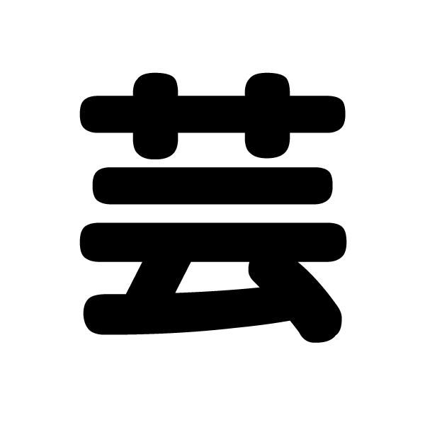

九州大学 大橋キャンパス
日時：2017/10/7〜8
終了いたしました。
第14回芸工祭に関してのご意見をお聞かせください。▼アンケートはこちら▼
芸工祭アンケート「芸工相談室」参加希望の方へ
・参加者予約を受け付けています
・相談役の芸工生も募集しています
詳しくはこちら
九州大学 大橋キャンパス
＜住所＞〒815-8540 福岡市南区塩原4-9-1
詳しくは >>こちら
芸工祭の"芸"の漢字をモチーフにしたマスコットキャラクターです。
画像をクリックすると"芸"から"芸子ちゃん"に変わります
| 性別 | 女の子 |
|---|---|
| 年齢 | ３歳くらい |
| 好きな食べ物 | おしるこ |
【第５回全国学園祭マスコット総選挙】に出場しています！
１日１回の投票をお願いします。
